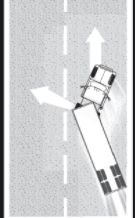

MODULO 2
2.8 – Prever riesgos
2.8.1 – La importancia de prever los riesgos
¿Qué es un riesgo? Un riesgo es cualquier condición en la carretera o cualquier otro usuario de la carretera (conductor, ciclista, peatón) que es un peligro potencial. Por ejemplo, un automóvil delante suyo se dirige hacia la salida de la autopista, pero las luces de freno se encienden y comienza a frenar bruscamente. Eso podría significar que el conductor no está seguro si tomar la salida. Podría volver repentinamente a la autopista. Ese automóvil es un riesgo. Si el conductor del automóvil se cruza delante suyo ya no se trata de un riesgo, es una emergencia.
Prever los riesgos le permite estar preparado. Tendrá más tiempo para actuar si prevé los riesgos antes de que se conviertan en emergencias. En el ejemplo anterior, usted podría cambiar de carril o disminuir la velocidad para prevenir un choque si el automóvil cruza repentinamente delante de usted. Prever ese riesgo le da tiempo de controlar los espejos y hacer señales para cambiar de carril. Estar preparado reduce el peligro. Un conductor que no previó el riesgo hasta que el automóvil lento volvió a la autopista delante de él, tendría que hacer algo muy bruscamente. Una frenada repentina o un cambio rápido de carril aumentan las probabilidades de un choque.
Aprender a prever los riesgos. Con frecuencia hay indicaciones que le ayudarán a prever los riesgos. Cuanto más conduce, mejor puede aprender a prever los riesgos. Esta sección tratará sobre riesgos de los que debe ser consciente.
2.8.2 Carreteras peligrosas
Leyes sobre “hacerse a un lado”. Se están incrementando a un ritmo espeluznante los incidentes en los que los oficiales de la ley, servicios médicos de emergencia, personal de bomberos o personas que trabajan en la carretera, son atropellados mientras desarrollan sus obligaciones al borde de la carretera. Para disminuir este problema, se han promulgado leyes de “hacerse a un lado”, que obligan a los conductores a reducir la velocidad y cambiar de carril cuando se aproximan a un incidente al borde de la ruta o a un vehículo de emergencia. En los estados que tienen este tipo de leyes, hay señales de tránsito en las calzadas.
Cuando se aproxime a un vehículo de emergencia autorizado detenido al borde de la carretera o a una zona en construcción, debe avanzar con cuidado. Reduzca la velocidad, y si las condiciones del tránsito y la seguridad lo permiten, ceda el paso con un cambio de carril hacia un carril que no esté cerca del que ocupa el vehículo autorizado de emergencia o la zona en construcción. Si un cambio de carril no es seguro, reduzca la velocidad y proceda con cuidado mientras mantiene una velocidad que sea segura para las condiciones del tráfico.
Reduzca la velocidad y sea muy cuidadoso si ve cualquiera de los siguientes peligros en la carretera.
Zonas de carretera en construcción Cuando hay personas trabajando en la carretera, hay un riesgo. Puede haber carriles más estrechos, giros bruscos o superficies desiguales. Muchas veces los otros conductores se distraen y conducen de una manera poco segura. Trabajadores y vehículos de la construcción podrían ponerse en su camino. Cerca de las zonas en construcción conduzca lenta y cuidadosamente. Use las luces intermitentes o las luces de freno para advertir a los conductores que van detrás suyo.
Desniveles. Algunas veces el pavimento tiene un desnivel pronunciado cerca del borde de la carretera. Conducir demasiado cerca del borde puede inclinar su vehículo hacia el lado de la carretera. Eso puede causar que la parte superior de su vehículo golpee objetos al borde de la carretera (señales, ramas de árboles). También puede ser difícil controlar el volante cuando cruza el desnivel, al salir de la carretera o al volver a ella.
Objetos extraños. Cosas que han caído en la carretera pueden ser un riesgo. Pueden ser un peligro para sus neumáticos o llantas. Pueden dañar los cables eléctricos o los frenos. Pueden quedar atrapadas entre los neumáticos dobles y causar un daño grave. Algunos objetos que aparentan ser inofensivos pueden ser muy peligrosos. Por ejemplo, las cajas de cartón pueden estar vacías, pero también pueden contener materiales sólidos o pesados capaces de causar daño. Lo mismo sucede con bolsas de papel o tela. Es importante estar alerta a los objetos de todo tipo, para que pueda verlos con tiempo suficiente como para evitarlos sin hacer movimientos bruscos o inseguros.
Rampas de salida y entrada. Las salidas de las autopistas y de los peajes pueden ser particularmente peligrosas para los vehículos comerciales. Las rampas de salida y entrada con frecuencia tienen señales con límites de velocidad. Recuerde, esas velocidades pueden ser seguras para un automóvil, pero pueden no serlo para vehículos grandes o vehículos con cargas pesadas. Las salidas con curvas en bajada pueden ser especialmente peligrosas. La bajada hace difícil reducir la velocidad. Frenar y doblar al mismo tiempo puede ser una práctica peligrosa. Asegúrese de ir lo suficientemente lento antes de llegar a la curva de una rampa de salida o entrada.
2.8.3 – Conductores peligrosos.
Para protegerse a usted mismo y a otros debe saber cuándo otros conductores podrían hacer algo peligroso. Algunas indicaciones para este tipo de riesgo se tratan más adelante.
Visión bloqueada. Las personas que no pueden ver a los demás son un riesgo muy peligroso. Esté atento a los conductores con la visión bloqueada. Furgonetas, camionetas cargadas y automóviles con la ventana trasera bloqueada son algunos ejemplos.
Los camiones de alquiler deben ser vigilados cuidadosamente. Con frecuencia los conductores de esos vehículos no están acostumbrados a la visión limitada que tienen a los lados y atrás del camión. En el invierno, los vehículos con ventanas heladas, cubiertas de hielo o de nieve, son un riesgo.
Los vehículos pueden estar parcialmente ocultos por intersecciones o callejones ciegos. Si solamente puede ver la parte de atrás o el frente de un vehículo, pero no al conductor, entonces el conductor no puede verlo a usted. Esté alerta porque podría salir o entrar en su carril. Siempre esté preparado para detenerse.
Los camiones de reparto pueden representar un riesgo. Los paquetes o las puertas del vehículo con frecuencia bloquean la visión del conductor. Los conductores de furgonetas cerradas, vehículos postales y vehículos de reparto locales a menudo están apurados y pueden descender repentinamente de sus vehículos o conducir su vehículo hacia un carril de tránsito.
Los vehículos estacionados pueden ser un riesgo, especialmente cuando las personas comienzan a descender. O pueden arrancar repentinamente e inter ponerse en su camino. Observe los movimientos dentro del vehículo o los movimientos del vehículo mismo que indican que hay gente adentro. Observe las luces de freno o las luces traseras, caños de escape, y otras señales que le indican que el conductor comenzará a moverse.
Tenga cuidado con un autobús detenido. Los pasajeros pueden cruzar por adelante o por atrás del autobús y con frecuencia no lo pueden ver.
Los peatones y los ciclistas también pueden ser un riesgo. Las personas que van caminando, trotando o en bicicleta pueden estar en la carretera de espaldas al tráfico y no pueden verlo. Algunas veces utilizan estéreos portátiles con audífonos, por lo que tampoco pueden oírlo. Eso puede ser peligroso. En los días lluviosos, los peatones pueden no verlo por los sombreros o paraguas. Pueden estar apurados por salir de la lluvia y no prestar atención al tráfico.
Distracciones. Las personas distraídas son un peligro. Observe hacia dónde miran. Si están mirando para otro lado, no pueden verlo. Pero esté alerta inclusive si están mirando hacia usted. Pueden creer que tienen derecho de paso.
Niños. Los niños tienden a actuar rápidamente sin prestarle atención al tráfico. Los niños jugando unos con otros podrían no mirar el tráfico y son un riesgo serio.
Personas conversando. Los conductores o peatones que van conversando pueden no estar prestando suficiente atención al tráfico.
Trabajadores. Las personas trabajando en la calzada, o cerca, son una señal de riesgo. El trabajo hace que los otros conductores se distraigan y los trabajadores mismos pueden no verlo.
Camiones de helado. Alguien vendiendo helado es una señal de riesgo. Puede haber niños cerca y puede que no lo vean.
Vehículos averiados. Los conductores que están cambiado una rueda o arreglando un motor a menudo no prestan atención al peligro que es el tráfico de la calzada para ellos. A menudo son descuidados. Ruedas levantadas con un gato o el capó levantado son indicadores de riesgo.
Accidentes Los accidentes son particularmente riesgosos. Las personas involucradas en un accidente pueden no prestarle atención al tráfico. Los conductores que pasan al lado tienden a mirar al accidente. Las personas a menudo cruzan la carretera sin mirar. Los vehículos pueden disminuir la velocidad o detenerse repentinamente.
Compradores. Las personas en las áreas de compras y alrededores a menudo no observan el tráfico porque están buscando comercios o mirando las vidrieras de los comercios.
Conductores confundidos. Los conductores confundidos con frecuencia cambian de dirección repentinamente o se detienen sin avisar. La confusión es común cerca de una autopista o en los enlaces de autopistas con peajes y en las intersecciones importantes. Los turistas que no están familiarizados con la zona pueden ser muy peligrosos. Algunas señales para detectar turistas son el equipaje arriba del automóvil y placas de otro estado. Las acciones inesperadas (detenerse en la mitad de una cuadra, cambiar de carril sin razón aparente, luces de retroceso que se encienden sorpresivamente) son señales de confusión. Vacilar es otra señal, incluyendo manejar lentamente, usar los frenos con frecuencia o detenerse en el medio de una intersección. Podría encontrarse también con conductores que miran los nombres de las calles, mapas y números de casas. Esos conductores podrían no estar prestándole atención.
Conductores lentos. Los automovilistas que no logran mantener una velocidad normal son peligrosos. Ver con anticipación los vehículos que se mueven lentamente puede prevenir un choque. Algunos vehículos, por su naturaleza, son lentos y verlos es una señal de riesgo (motocicletas, maquinaria agrícola, maquinaria de construcción, tractores, etc.). Algunos de esos tendrán un símbolo de “vehículo lento” como advertencia. El símbolo es un triángulo rojo con centro naranja. Préstele atención.
Los conductores que hacen una señal de giro pueden ser un riesgo. Los conductores que hacen una señal de giro pueden disminuir de velocidad más de lo esperado o detenerse. Si están haciendo un giro cerrado hacia un callejón o entrada, pueden ir muy despacio. Si los peatones u otros vehículos los bloquean, pueden tener que detenerse en la calzada. Los vehículos que giran a la izquierda pueden tener que detenerse por los vehículos que vienen en sentido contrario.
Conductores apurados. Otros conductores pueden tener la sensación de que su vehículo comercial les impide llegar a tiempo adonde quieren ir. Esos conductores pueden rebasarlo sin tener un espacio seguro en el tráfico que viene de frente, y entrar muy cerca adelante de usted. Los conductores que entran en la carretera pueden entrar adelante de usted para evitar quedar atrapados atrás de usted, lo que lo obliga a frenar. Preste atención a esto y observe a los conductores apurados.
Conductores con capacidades disminuidas. Conductores con sueño, que han bebido demasiado, drogados o enfermos son riesgos. Algunas señales para detectar estos conductores son:
•Zigzaguear en la carretera o ir de un lado a otro.
•Salirse de la carretera (ruedas de la derecha que caen al arcén o golpear contra el bordillo al girar).
•Detenerse en el momento incorrecto (detenerse con luz verde o esperar demasiado tiempo en una parada).
•Ventana abierta cuando hace frío.
•Aumentar o disminuir la velocidad repentinamente, conducir demasiado rápido o demasiado lento.
•Esté alerta a los conductores ebrios o somnolientos tarde de noche.
Movimiento del cuerpo del conductor como señales. Los conductores miran en la dirección hacia la que doblarán. Algunas veces los movimientos del cuerpo y la cabeza del conductor pueden indicarle que un conductor hará un giro a pesar de que las luces de giro no estén encendidas. Los conductores que miran sobre el hombro pueden estar a punto de hacer un cambio de carril. Estas señales se ven más fácilmente en los motociclistas y ciclistas. Observe a otros usuarios de la carretera y trate de detectar si harán algo peligroso.
Conflictos. Usted tiene un conflicto cuando tiene que cambiar de velocidad y/o dirección para evitar chocar con alguien. Los conflictos ocurren en las intersecciones donde se cruzan los vehículos, las entradas en las carreteras (como en las rampas de las autopistas con peaje) y cuando se debe cambiar de carril (como al final de un carril que obliga a cambiarse a otro carril de tráfico). Otros casos son movimiento lento o tráfico atascado en un carril y accidentes. Observe a otros conductores que están en conflicto porque son un riesgo para usted. Cuando reaccionan a ese conflicto, podrían hacer algo que los ponga en conflicto con usted.
2.8.4 – Siempre tenga un plan
Siempre debe estar atento a los peligros. Continúe aprendiendo a ver los peligros en la carretera. No olvide por qué tiene que estar atento a los peligros: se pueden convertir en emergencias. Usted está atento a los peligros para tener tiempo para planear una salida a una emergencia. Cuando vea un peligro, piense en las emergencias que podrían producirse y piense qué haría. Siempre esté preparado para actuar en base a sus planes. De esa manera, será un conductor preparado y defensivo que mejorará su propia seguridad y la seguridad de todos los usuarios de la carretera.
2.8.4 – Siempre tenga un plan
Siempre debe estar atento a los peligros. Continúe aprendiendo a ver los peligros en la carretera. No olvide por qué tiene que estar atento a los peligros: se pueden convertir en emergencias. Usted está atento a los peligros para tener tiempo para planear una salida a una emergencia. Cuando vea un peligro, piense en las emergencias que podrían producirse y piense qué haría. Siempre esté preparado para actuar en base a sus planes. De esa manera, será un conductor preparado y defensivo que mejorará su propia seguridad y la seguridad de todos los usuarios de la carretera.
2.9 – Distraerse al conducir
Una distracción es cualquier cosa que desvía su atención mientras conduce. Cuando está conduciendo un vehículo y su atención no está completamente enfocada en la conducción, está poniendo a sus pasajeros, otros vehículos, a los peatones y a usted mismo en peligro. Distraerse al conducir puede causar colisiones y resultar en lesiones, muerte y daños a la propiedad.
Algunas de las actividades dentro del vehículo que pueden distraer su atención son: hablar con los pasajeros; ajustar la radio, el reproductor de CD o los controles de temperatura; comer, beber o fumar; leer mapas u otros materiales; recoger algo que se cayó; hablar por teléfono o radio; leer o enviar mensajes de texto; usar aparatos electrónicos o telemáticos (tales como sistemas de navegación, buscapersonas, asistentes digitales personales, computadoras, etc.); soñar despierto o estar ocupado con otras distracciones mentales; y muchas otras.
Posibles distracciones que pueden producirse fuera del vehículo en movimiento son: el tráfico, vehículos o peatones; eventos tales como la policía haciendo que un vehículo se detenga o un accidente; la luz del sol o la puesta del sol; objetos en la calzada; carreteras en construcción; leer carteles de anuncios u otro tipo de anuncios en la carretera y muchas otras.
2.9.1 – El problema de conducir distraído y los choques
El Estudio sobre Causas de Choques de Camiones Grandes (LTCCS, por sus siglas en inglés) informa que ocho por ciento de los choques de camiones grandes ocurrieron cuando los conductores estaban distraídos con eventos exteriores, y dos por ciento ocurrieron cuando los conductores estaban distraídos internamente.
Aproximadamente 5,500 personas mueren cada año en las calzadas de Estados Unidos y se estima que 448,000 sufren lesiones en accidentes con vehículos de motor causados por distracciones al conducir. (NHTSA Datos sobre seguridad en el tráfico: Distracciones al conducir).
Las investigaciones indican que la atención requerida por una conversación por teléfono celular (inclusive con manos libres) consume el 39% de la energía que el cerebro utiliza para conducir. Los conductores que utilizan un aparato que se sujeta en la mano tienen muchas más probabilidades de tener un accidente lo suficientemente serio como para producir lesiones. (NHTSA Distracciones al conducir sitio web, www.distraction.gov).
2.9.2 – Efectos de distraerse al conducir.
Algunos efectos de distraerse al conducir son: percepción lenta, que puede retrasar o impedir la percepción de eventos de tráfico importantes; decisiones demoradas o mal tomadas, que pueden demorar una acción adecuada o hacer que se accionen incorrectamente el volante, el acelerador o los frenos.
2.9.3 – Tipos de distracciones
Hay muchas causas de distracciones, todas con potencial de aumentar los riesgos.
•Distracciones físicas – hacen que retire las manos del volante o los ojos de la carretera, tales como intentar alcanzar un objeto.
•Distracciones mentales – actividades que desvían su mente de la carretera, tales como una conversación con un pasajero o pensar en algo que ocurrió durante el día.
•Distracciones físicas y mentales – probabilidad aun mayor de que se produzca un accidente, tales como hablar por teléfono celular, o enviar o leer mensajes de texto.
2.9.4 – Teléfonos celulares/móviles
El uso de teléfonos móviles que se sujetan con la mano significa “usar por lo menos una mano para sostener un teléfono móvil para mantener una comunicación mediante la voz”; “marcar en un teléfono móvil presionando más de un botón”; o “moverse desde la posición sentado para conducir sujeto por un cinturón de seguridad para alcanzar un teléfono móvil”.
Su principal responsabilidad es conducir el vehículo de motor comercial con seguridad. Para hacer esto, debe enfocar toda su atención en la tarea de conducir. Tenga en cuenta que los aparatos de manos libres provocan que se distraiga lo mismo que un teléfono celular que se sujeta en la mano. Cuando se usa cualquiera de los dos tipos de aparato se desvía la atención de la tarea de conducir.
2.9.5 – Enviar y leer mensajes de texto
más alarmante porque involucra simultáneamente distracciones físicas y mentales.
Las investigaciones demuestran que las probabilidades de estar involucrado en un evento crítico de seguridad (por ejemplo un choque, casi choque o una desviación no intencional de carril) es 23.2 veces más grande para los conductores de vehículos de motor comercial que envían o leen mensajes de texto mientras conducen, que para los que no lo hacen. Enviar o recibir mensajes de texto desvía su mirada de la carretera por un promedio de 4.6 segundos. A 55 mph usted se desplazará 371 pies, el largo de un campo de fútbol completo, sin mirar la calzada.
2.9.6 – No conduzca distraído
Su objetivo debe ser eliminar todas las distracciones dentro del vehículo antes de comenzar a conducir. Se puede lograr este objetivo si:
•Antes de comenzar a conducir se evalúan todas las distracciones potenciales dentro del vehículo.
•Se analizan los posibles escenarios antes de sentarse al volante.
En base a la evaluación de las distracciones potenciales se puede formular un plan preventivo para reducir/ eliminar las posibles distracciones.
Los choques se duplican si los conductores reaccionan medio segundo más despacio por culpa de las distracciones. Para no distraerse siga estas pautas:
•Apague todos los aparatos de comunicación.
•Si debe usar un teléfono celular, asegúrese de que detuvo el vehículo, use un auricular o la función de altavoz, use el discado activado por voz o use un aparato de manos libres.
•No escriba o lea mensajes de texto en un dispositivo móvil mientras conduce.
•Familiarícese con las características y equipos de su vehículo antes de ponerse al volante.
•Ajuste a su preferencia los controles y espejos del vehículo antes de conducir.
•Programe estaciones de radio y cargue sus CD favoritos o usb.
•Limpie el vehículo de objetos innecesarios y asegure la carga.
•Revise los mapas, programe el GPS y planifique su ruta antes de comenzar a conducir.
•No intente leer o escribir mientras conduce.
•Evite fumar, comer o beber mientras maneja. Salga temprano para tener tiempo para detenerse a comer.
•No mantenga conversaciones complejas o emocionalmente intensas con otros ocupantes. •Asegúrese el compromiso de los otros ocupantes de comportarse responsablemente y ayudar al conductor a reducir las distracciones.
2.9.7 – Esté atento a otros conductores distraídos
Necesita ser capaz de reconocer cuando los otros conductores están ocupados en alguna forma de distracción mientras conduce. No reconocer que otros conductores están distraídos puede evitar que usted perciba o reaccione correctamente a tiempo y evite un accidente. Esté atento a:
•Vehículos que se desvían sobre las líneas divisorias o en su propio carril.
•Vehículos que viajan a velocidades inconsistentes.
•Conductores ocupados con mapas, comida, cigarrillos, teléfonos celulares u otros objetos.
•Conductores que parecen estar conversando con sus pasajeros.
Déjele al conductor distraído mucho espacio y mantenga una distancia segura con el vehículo que va adelante.
Sea muy cuidadoso al rebasar un conductor que parece estar distraído. El otro conductor puede no ser consciente de su presencia y puede cruzarse adelante de usted.
2.10 – Conductores agresivos/violencia en la carretera
2.10.1 – ¿Qué es?
La conducción agresiva y la violencia en la carretera no son un problema nuevo. De todas maneras, en el mundo de hoy, donde el tránsito pesado y lento y las agendas ajustadas son la norma, más y más conductores descargan su ira y frustración en sus vehículos.
Las carreteras congestionadas dejan poco espacio para el error, producen desconfianza y hostilidad entre los conductores y hacen que tomen los errores de otros conductores de forma personal.
La conducción agresiva es el acto de conducir un vehículo de motor en forma egoísta, audaz o prepotente, sin consideración por los derechos y la seguridad de los demás.
Violencia en la carretera es conducir un vehículo de motor con la intención de dañar a otros o agredir físicamente un conductor o su vehículo.
2.10.2 – No sea un conductor agresivo
La forma en que se siente, inclusive antes de encender su vehículo, tiene mucho que ver con cómo lo afectará mientras conduce.
•Reduzca su estrés antes y mientras conduce. Escuche música tranquila.
•Ponga toda la atención en conducir. No permita que lo distraigan conversaciones en el celular, comida, etc.
•Sea realista respecto al tiempo de viaje. Espere demoras por el tráfico, construcción o mal tiempo y haga previsiones.
•Si llegará más tarde de lo esperado, acéptelo. Respire profundamente y acepte la demora.
•Dé a otros conductores el beneficio de la duda. Trate de imaginar por qué la otra persona está conduciendo de esa manera. Cualquiera sea el motivo, no tiene nada que ver con usted.
•Reduzca la velocidad y mantenga una distancia razonable con el vehículo que va adelante.
•No conduzca lentamente en el carril izquierdo.
•Evite los gestos. Mantenga sus manos en el volante.
Evite hacer cualquier gesto que pueda enfurecer otro conductor, inclusive las expresiones aparentemente inofensivas de irritación, como sacudir la cabeza.
•Sea un conductor cauteloso y cortés. Si otro conductor parece impaciente por rebasarlo, diga “Adelante, por favor”. Esa respuesta pronto se convertirá en un hábito y no lo ofenderán más las acciones de otros conductores.
2.10.3 – Qué debe hacer cuando se enfrenta a un conductor agresivo
•Primero y antes que nada, haga todo lo que pueda para salir de su camino.
•Ponga su orgullo en el asiento trasero. No lo desafíe aumentando la velocidad o intentando mantener su posición en el carril.
•Evite el contacto visual.
•Ignore los gestos y evite reaccionar a ellos.
•Informe de los conductores agresivos a las autoridades correspondientes con una descripción del vehículo, número de licencia, ubicación, y si fuera posible, dirección del viaje.
•Si tiene un teléfono celular y puede usarlo con seguridad, llame a la policía.
•Si el conductor agresivo se ve involucrado en un choque más adelante en la carretera, deténgase a una distancia segura de la escena del accidente, espere a que llegue la policía e informe del comportamiento del conductor del que usted fue testigo.
2.11 – Conducir durante la noche
2.11.1 – Es más peligroso
Corre más riesgos cuando conduce durante la noche. Los conductores no pueden ver los peligros tan rápidamente como a la luz del día, y por lo tanto tienen menos tiempo para reaccionar. Los conductores tomados por sorpresa tienen menos capacidad de evitar un choque.
Los problemas de conducir en la noche involucran al conductor, la carretera y el vehículo.
2.11.2 – Factores relacionados con el conductor
Visión. La buena visibilidad es crucial para conducir con seguridad. El control del freno, el acelerador y el volante se basan en lo que ve. Si no puede ver con claridad, tendrá dificultades para identificar el tráfico y las condiciones de la calzada, localizar problemas potenciales o reaccionar a los problemas a tiempo.
Debido a que ver bien es crucial para conducir con seguridad, usted debería hacerse controlar la vista por un especialista con regularidad. Podría no enterarse de que tiene una mala visión si no se controla la vista. Si necesita usar anteojos o lentes de contacto para manejar, recuerde:
•Úselos siempre cuando conduce, inclusive en distancias cortas. Si su licencia dice que requiere anteojos, es ilegal mover el vehículo sin usar los anteojos correctores.
•Guarde un par extra de anteojos correctores en su vehículo. Si los anteojos correctores que usa habitualmente se rompen o pierden, puede usar los anteojos de repuesto y conducir con seguridad.
•Evite usar anteojos correctores oscuros o coloreados en la noche, inclusive si piensa que lo ayudan con el resplandor. Los lentes coloreados reducen la luz que necesita para ver claramente al conducir de noche.
Resplandor. Una luz brillante puede enceguecer a los conductores por un corto período de tiempo. Puede llevar varios segundos recuperarse del resplandor. Inclusive dos segundos enceguecidos por el resplandor pueden ser peligrosos. Un vehículo a 55 mph recorrerá más de la mitad de la distancia de un campo de fútbol durante ese tiempo.
Fatiga y falta de atención. La fatiga es el cansancio físico o mental que puede ser causado por el esfuerzo físico o mental, tareas repetitivas, enfermedad o falta de sueño. Al igual que el alcohol y las drogas, afecta su visión y criterio.
La fatiga causa errores relacionados con la velocidad y la distancia, aumenta el riesgo de tener un choque, hace que no vea o reaccione tan rápidamente a los peligros y afecta su capacidad de tomar decisiones críticas. Cuando está fatigado, podría dormirse al volante y chocar, lastimando o matando a otras personas o a usted mismo.
Conducir con fatiga o sueño son una de las principales causas de colisiones en el tráfico. La NHTSA estima que 100,000 choques anuales informados a la policía son el resultado de conductores somnolientos. Según la encuesta sobre sueño en Estados Unidos de la Fundación Nacional del Sueño, el 60% de los estadounidenses ha conducido sintiendo sueño y más de un tercio (36% o 103 millones de personas) admite haberse quedado dormido al volante. Los conductores pueden experimentar cortos períodos de sueño que duran solamente unos segundos, o quedarse dormidos por períodos más largos de tiempo. De cualquiera de esas formas, la fatiga aumenta las probabilidades de un choque.
Grupos de riesgo El riesgo de sufrir un choque por conducir con somnolencia no se distribuye uniformemente en la población. Los choques tienden a ocurrir en momentos en que la somnolencia es más pronunciada, por ejemplo, durante la noche o a media tarde. La mayoría de las personas está menos alerta en la noche, especialmente después de medianoche. Eso es particularmente cierto si ha estado conduciendo mucho rato. Por lo tanto, las personas que conducen en la noche tienen mucho más probabilidades de tener accidentes por dormirse.
Las investigaciones han identificado que tienen más riesgo de tener un accidente por dormirse los hombres jóvenes, los trabajadores con turnos rotativos, los conductores comerciales, los conductores que realizan viajes particularmente largos, las personas con trastornos del sueño no tratados o con falta de sueño crónica o en el corto plazo. Al menos el 15% de los choques de camiones pesados involucran fatiga.
Signos de fatiga que son una advertencia muchas personas no pueden saber si están por dormirse o cuándo están por dormirse. Estos son algunos signos que deben indicarle que se detenga y descanse:
•Dificultad para enfocarse, parpadeos frecuentes o párpados pesados.
•Bostezar repetidamente o frotarse los ojos.
•Soñar despierto, o divagar/tener pensamientos desconectados.
•Dificultad para recordar las últimas millas manejadas, saltarse salidas o señales de tránsito.
•Dificultad para sostener la cabeza.
•Desviarse de su carril, seguir al vehículo de adelante muy de cerca o pasar sobre las líneas sonorizadoras del arcén.
•Estar inquieto o irritable.
Cuando está cansado, tratar de “seguir un poco más” es mucho más peligroso de lo que muchos conductores piensan. Es una de las principales causas de accidentes fatales. Si detecta cualquier signo de fatiga, deje de conducir y váyase a dormir o tómese una siesta de 15 a 20 minutos.
¿Está en riesgo?
Antes de conducir, considere si está en alguna de estas situaciones:
•Con falta de sueño o fatigado (6 horas de sueño o menos triplican su riesgo).
•Sufriendo de falta de sueño (insomnio), sueño de baja calidad o sueño atrasado.
•Conduciendo largas distancias sin los descansos adecuados.
•Conduciendo de noche, a media tarde o cuando usted normalmente estaría durmiendo. Muchos de los accidentes de vehículos pesados de motor ocurren entre la medianoche y las 6 a.m.
•Tomando medicamentos sedantes (antidepresivos, tabletas contra el resfrío, antihistamínicos).
•Trabajando más de 60 horas por semana (aumenta su riesgo en un 40%).
•Trabajando en más de un trabajo y su trabajo principal implica turnos rotativos.
•Conduciendo solo en una carretera larga, rural, oscura o aburrida.
•Viajando en avión, cambiando de zona horaria. Prevenir la somnolencia antes de un viaje: •Duerma lo suficiente, los adultos necesitan de 8 a 9 horas para mantenerse alertas.
•Planifique su ruta con cuidado, conozca la distancia total, las paradas y otras consideraciones logísticas.
•Programe el viaje para las horas en las que normalmente está despierto, no la mitad de la noche.
•Conduzca con un pasajero.
•Evite la medicación que causa somnolencia.
•Consulte a su médico si sufre adormecimientos durante el día, tiene dificultades para dormir de noche o duerme siestas frecuentes.
•Haga ejercicio en su vida diaria para tener más energía.
Mantenerse alerta mientras conduce:
•Protéjase del resplandor y la vista cansada con lentes de sol.
•Manténgase fresco abriendo la ventana o usando el aire acondicionado.
•Evite las comidas pesadas.
•Esté atento a las pausas durante el día.
•Haga que otra persona viaje con usted y tomen turnos para conducir.
•Tómese descansos regulares, aproximadamente cada 100 millas o dos horas de conducción para los viajes largos.
•Deje de conducir y tome un descanso o duerma una siesta.
•El consumo de cafeína puede hacer que esté más alerta por unas horas, pero no tome demasiado. El efecto terminará desapareciendo. No confíe en la cafeína para prevenir la fatiga.
•Evite las drogas. Podrán mantenerlo despierto por un tiempo, pero no harán que esté más alerta.
•Si está somnoliento, la única cura segura es salirse de la carretera y dormir un poco. Si no lo hace, arriesga su vida y la vida de otros.
2.11.3 – Factores relacionados con la carretera
Mala iluminación. Durante el día, generalmente hay suficiente luz como para ver bien. Eso no es así en la noche. Algunas áreas pueden tener un alumbrado intenso, pero muchas otras tendrán una mala iluminación. Es probable que en la mayoría de las carreteras dependa únicamente de sus focos.
Menos luz significa que no podrá ver los peligros tan bien como durante el día. Es muy difícil ver a los usuarios de las carreteras que no tienen luces. En las noches hay muchos accidentes que involucran peatones, corredores, ciclistas y animales.
Inclusive con luces, la carretera puede ser confusa. Las señales de tránsito y los peligros pueden ser difíciles de ver con un fondo de letreros, vidrieras de comercios y otras luces.
Cuando la iluminación sea mala o confusa, conduzca más lentamente.
Conduzca lo suficientemente lento como para estar seguro de poder detenerse en la distancia que puede ver hacia adelante.
Conductores borrachos. Los conductores borrachos y los conductores bajo la influencia de las drogas son un peligro para usted y para ellos mismos. Esté especialmente alerta alrededor de los horarios de cierre de bares y tabernas. Tenga cuidado con los conductores que tienen dificultades para mantenerse en su carril o mantener la velocidad, que se detienen sin ninguna razón, o muestran algún otro signo de estar bajo la influencia del alcohol o las drogas.
2.11.4 – Factores relacionados con el vehículo.
Focos delanteros. En la noche, sus focos delanteros serán normalmente la mayor fuente de luz para que usted vea y para que lo vean a usted. Los focos delanteros no le permiten ver casi nada en comparación con lo que
ve con la luz del día. Con las luces cortas puede ver unos 250 pies hacia adelante y con las luces largas unos 350 a 500 pies. Debe ajustar su velocidad para mantener la distancia necesaria para detenerse dentro de la distancia que ve. Eso significa ir lo suficientemente lento como para poder detenerse dentro del alcance de sus focos delanteros. De lo contrario, cuando vea un peligro, no tendrá tiempo de detenerse.
Conducir de noche puede ser aún más peligroso si tiene problemas con sus focos delanteros. Los focos delanteros sucios pueden iluminar la mitad de lo que deberían. Eso limita su capacidad de ver, y hace más difícil que otros lo vean. Asegúrese de que sus luces estén limpias y funcionen. Los focos delanteros pueden estar desajustados. Si no apuntan en la dirección correcta, no le proporcionarán una buena visión y pueden encandilar a otros conductores. Haga que una persona cualificada se asegure de que están adecuadamente ajustados.
Otras luces. Para ser visto fácilmente, las siguientes luces deben estar limpias y funcionando correctamente:
•Reflectores.
•Luces de posición.
•Luces traseras.
•Luces de identificación.
Luces de giro y luces de freno. En la noche, las luces de giro y las luces de freno son incluso más importantes para avisarles a los otros conductores lo que intenta hacer. Asegúrese de tener luces de giro y de freno que funcionen y estén limpias.
Parabrisas y espejos. Es más importante tener limpios el parabrisas y los espejos en la noche que en el día. Las luces brillantes en la noche pueden hacer que la suciedad en su parabrisas o espejos tenga su propio resplandor y bloquee su visión. Muchas personas que han manejado contra el sol, tanto al amanecer como al atardecer, han descubierto que apenas podían ver a través de un parabrisas que parecía limpio a la mitad del día. Limpie su parabrisas por dentro y por fuera para conducir con seguridad en la noche.
2.11.5 – Procedimientos para conducir en la noche
Procedimientos relacionados con el vehículo. Asegúrese de estar descansado y alerta. Si está somnoliento, ¡duerma antes de conducir! Una siesta puede salvar su vida y la de otros. Si usa anteojos, asegúrese de que estén limpios y sin rayones. No use anteojos de sol en la noche. Haga una inspección completa de su vehículo. Ponga atención en controlar todas las luces y reflectores, y en limpiar los que puede alcanzar.
Evite encandilar a otros. El resplandor de sus focos delanteros puede causar problemas en los conductores que vienen hacia usted. También puede molestar a los conductores que van en su misma dirección cuando las luces de su vehículo brillan en sus espejos retrovisores. Atenúe sus luces antes de que encandilen a otros conductores. Atenúe sus luces a 500 pies de un vehículo que viene en dirección contraria y cuando sigue a otro vehículo a menos de 500 pies.
Evite el resplandor de los vehículos que vienen en dirección contraria. No mire directamente las luces de los vehículos que vienen en dirección contraria. Mire apenas hacia la derecha en el carril derecho o a la línea del borde, si hay una. Si otros conductores no ponen las luces cortas, no trate de responderles poniendo sus luces largas. Esto aumenta el resplandor para los vehículos que vienen en dirección contraria y aumenta las probabilidades de un choque.
Use las luces largas cuando pueda. Algunos con ductores cometen el error de usar siempre las luces cortas. Esto limita seriamente su capacidad de ver hacia adelante. Use las luces largas cuando es seguro y legal hacerlo. Úselas cuando no está dentro de los 500 pies de un vehículo que se aproxima. Tampoco permita que el interior de su cabina quede muy brillante.
Eso hace que sea más difícil mirar hacia afuera. Mantenga sus luces interiores apagadas, y ajuste las luces de sus instrumentos tan bajo como le sea posible leer los medidores.
Si le viene sueño, deténgase en el lugar seguro más cercano. Las personas muchas veces no se dan cuenta qué tan cerca están de dormirse, inclusive cuando sus párpados se le cierran. Si puede hacerlo con seguridad, mírese en el espejo. Si tiene aspecto de dormido, o tiene sueño, ¡deje de conducir! Está en una situación muy peligrosa. La única cura segura es dormir.
2.12 – Conducir en la niebla
La niebla puede aparecer en cualquier momento. La niebla en las autopistas puede ser extremadamente peligrosa. Muchas veces es inesperada, y la visibilidad puede deteriorarse rápidamente. Debe estar alerta ante condiciones de niebla y estar listo para reducir la velocidad. No asuma que la niebla se disipará en cuanto usted entre en ella.
Lo más aconsejable es no manejar en la niebla. Es preferible que salga de la carretera y se detenga en un área de descanso o en una parada para camiones hasta que mejore la visibilidad. Si debe conducir, asegúrese de tener en cuenta lo siguiente:
•Obedezca todas las señales de advertencia relacionadas con la niebla.
•Reduzca la velocidad antes de entrar en la niebla.
•Use las luces cortas de sus faros delanteros o focos para niebla para tener una mejor visibilidad, inclusive durante el día. Y esté alerta a los otros conductores que podrían haberse olvidado de encender sus luces. •Encienda sus luces intermitentes. Eso le dará a los vehículos que se le aproximan la oportunidad de detectar su vehículo más rápidamente.
•Tenga cuidado con los vehículos en el otro lado de la calzada. Ver luces traseras o delanteras frente a usted puede no ser una indicación correcta de dónde está la carretera delante suyo. El vehículo podría no estar en la carretera.
•Use los reflectores laterales de la autopista como guías para determinar cómo se curva delante suyo.
•Escuche el tráfico que no puede ver.
•Evite rebasar otros vehículos.
•A no ser que sea absolutamente necesario, no se detenga al costado de la carretera.
2.13 – Conducir en invierno
2.13.1 – Controles al vehículo
Asegúrese de que su vehículo esté listo para ser conducido en condiciones invernales. Debe hacer inspecciones regulares de su vehículo y prestar atención adicional a los siguientes aspectos:
Limpiaparabrisas y lavaparabrisas. Asegúrese de que las escobillas de los limpiaparabrisas están en buenas condiciones. Asegúrese de que las escobillas presionan lo suficientemente fuerte la ventana como para limpiar el parabrisas,. Asegúrese de que el lavaparabrisas funciona y tiene líquido limpiador en el tanque de reserva.
Neumáticos. Asegúrese de que las ranuras de la banda de rodadura de sus neumáticos sean lo suficientemente profundas. Las ruedas de tracción deben tener tracción para empujar el camión en pavimentos mojados. Las ruedas de dirección deben tener tracción para conducir el vehículo. Es especialmente importante en las condiciones de invierno la profundidad de las ranuras de la banda de rodadura.
Frenos mojados. Cuando conduzca con lluvia abundante o por lugares con aguas estancadas profundas, sus frenos se mojarán. El agua en los frenos puede causar que se debiliten, funcionen de manera irregular o se atasquen. Eso puede causar una pérdida de la potencia de frenado, ruedas bloqueadas, tironeos de un lado y otro y que el remolque gire y se pliegue con efecto tijera
Si fuera posible, evite conducir a través de charcos profundos o corrientes de agua. Si no lo puede evitar, debe:
•Reducir la velocidad y poner la transmisión en una marcha baja.
•Usar suavemente los frenos. Eso presiona el revestimiento de los frenos contra los tambores o discos de freno y evita que entre barro, sedimentos, arena y agua.
•Aumentar las rpm del motor y cruzar el agua mientras mantiene una leve presión en los frenos.
•Cuando salga del agua, mantenga la presión leve sobre los frenos en una distancia corta para calentarlos y secarlos.
Haga una frenada de prueba cuando sea seguro hacerlo. Verifique que nadie está detrás suyo y luego aplique los frenos para asegurarse de que funcionan bien. Si no funcionan bien, séquelos como se describió antes. (CUIDADO: No aplique demasiada presión al freno y al acelerador a la misma vez porque podría sobrecalentar los tambores y los revestimientos de los frenos).
2.14 – Conducir con mucho calor
2.14.1 – Controles al vehículo
Haga la inspección normal del vehículo, pero preste especial atención a estos aspectos:
Neumáticos. Controle el montaje y la presión de aire de los neumáticos. Inspeccione los neumáticos cada dos horas o cada 100 millas cuando conduzca con mucho calor. La presión del aire aumenta con la temperatura. No saque aire a los neumáticos o la presión será demasiado baja cuando se enfríen. Si un neumático está demasiado caliente como para tocarlo, permanezca detenido hasta que se enfríe. De lo contrario, el neumático podría explotar o prenderse fuego.
Aceite del motor. El aceite del motor mantiene el motor frío, además de lubricarlo. Asegúrese de que haya suficiente aceite. Si tiene un medidor de temperatura del aceite, asegúrese de que mientras conduce la temperatura esté dentro del intervalo adecuado.
2.14.2 – Al conducir
Tenga cuidado con el alquitrán derretido. Cuando hace mucho calor, el alquitrán en el pavimento de la carretera con frecuencia sube a la superficie. Los lugares donde el alquitrán “sangra” en la superficie son muy resbalosos.
Vaya lo suficientemente lento como para evitar el sobrecalentamiento. Las velocidades altas producen más calor para los neumáticos y el motor. En el desierto, el calor puede aumentar hasta un punto en el que se vuelve peligroso. El calor aumenta las probabilidades de que el motor falle y de que los neumáticos fallen, y hasta de que se prendan fuego.
2.15 – Cruces de vías de tren y carreteras
Los cruces a nivel de vías de tren y autopistas son un tipo especial de intersección donde la carretera cruza las vías del tren. Estos cruces son siempre peligrosos. Es necesario aproximarse a estos cruces asumiendo que un tren se está acercando. Es muy difícil evaluar la distancia del tren al cruce y la velocidad a la que se aproxima.
2.15.1 – Tipos de cruces.
Cruces pasivos. Este tipo de cruces no tiene ningún tipo de dispositivo de control del tránsito. La decisión de cruzar o detenerse depende enteramente de usted. Un cruce pasivo requiere que estudie el cruce, que se fije si hay un tren usando las vías y que decida si tiene suficiente espacio como para cruzar con seguridad.
Cruces activos. Este tipo de cruces tiene instalados dispositivos de control del tránsito para regular el tráfico en el cruce. Estos dispositivos activos tienen luces rojas intermitentes, con o sin timbres, y luces rojas destellantes con timbres y barreras.
2.15.2 – Señales y dispositivos de advertencia.
Señales de advertencia anticipada. La señal de advertencia amarilla y negra redonda se ubica antes de un cruce público de vías de tren y carretera. Este signo de advertencia anticipado le indica que disminuya la velocidad, mire y escuche si viene un tren, y que se prepare a detenerse al llegar a las vías si un tren está viniendo. Todos los vehículos que transportan pasajeros y materiales peligrosos deben detenerse.
MARCAS EN EL PAVIMENTO
Marcas en el pavimento. Las marcas en el pavimento tienen el mismo significado que las señales de advertencia anticipada. En las carreteras de dos carriles consisten en una “X” con las letras
En las carreteras de dos carriles también hay una señal que indica una zona de no pasar. Podría haber una línea blanca de “Alto” pintada en el pavimento antes de las vías de tren. El frente de los autobuses escolares debe permanecer detrás de esta línea cuando está detenido en un cruce.
BARRERAS / LUCES
2.15.3 – Procedimientos al conducir
Nunca corra una carrera hasta un cruce con un tren. Nunca intente correr una carrera con un tren hasta un cruce. Es muy difícil evaluar la velocidad a la que se aproxima un tren.
Reduzca su velocidad. La velocidad se debe reducir de acuerdo con su capacidad de ver los trenes que se aproximan en cualquier dirección. Se debe mantener una velocidad que le permita detenerse antes de llegar a las vías si fuera necesario.
de señales de advertencia, barreras o personas con banderas para avisarle que un tren se aproxima. Esté especialmente alerta en los cruces que no tienen barreras o señales con luces rojas intermitentes.
2.15.4 – Frenar con seguridad en cruces de vías de tren y carreteras
Debe detenerse completamente en un cruce a nivel cuando:
•La naturaleza de su carga haga que las regulaciones estatales y federales lo obliguen a detenerse.
•La ley lo obligue a detenerse.
Cuando se detenga asegúrese de:
•Controlar el tránsito detrás de él mientras se detiene gradualmente. Usar un carril de salida, si hay uno.
•Encender sus luces intermitentes de emergencia.
2.15.5 – Al cruzar las vías
Cruzar una vía con subida muy inclinada puede hacer que su vehículo quede atascado en las vías. Nunca permita que las condiciones del tránsito lo dejen atrapado en una posición en la que tiene que detenerse sobre las vías. Asegúrese de poder cruzar completamente las vías antes de empezar a cruzarlas. A un camión con remolque común le lleva por lo menos 14 segundos para despejar una sola vía y más de 15 segundos para despejar vías dobles.
No cambie de marcha mientras cruza las vías del tren.
2.15.6 – Situaciones especiales
¡Tenga cuidado! Estos remolques pueden atascarse en un cruce elevado:
•Unidades bajas (plataformas bajas, transporte de automóviles, camiones de mudanzas, remolques para transporte de animales de cama baja).
•Camiones tractores de un solo eje que arrastran un remolque largo con patas de soporte diseñadas para ser utilizadas por un camión tractor de dos ejes.
Si por alguna razón queda atascado en las vías, salga del vehículo y aléjese de las vías. Busque en los letreros o en la casilla de señales en el cruce la información para notificar una emergencia. Llame al 911 o a otro número de emergencia.
2.16 – Conducir en la montaña
En la montaña, la gravedad tiene un rol muy importante. En cualquier subida, la gravedad lo enlentece. Cuanto más pronunciada o más larga sea la pendiente, y/o más pesada la carga, más tendrá que usar las marchas bajas para subir las colinas o las montañas. Al bajar pendientes largas y/o pronunciadas, la gravedad hace que aumente la velocidad de su vehículo. Debe elegir una velocidad segura, y luego usar una marcha baja y las técnicas de frenado apropiadas. Debe planificar su ruta con anticipación y obtener información sobre cualquier pendiente larga y/o pronunciada que atravesará. Si fuera posible, hable con otros conductores que estén familiarizados con las pendientes que encontrará para informarse qué velocidades son seguras.
Debe ir lo suficientemente despacio como para que sus frenos puedan retenerlo sin calentarse demasiado. Si los frenos se calientan demasiado, pueden empezar a “gastarse”. Eso significa que deberá presionarlos con más y más fuerza para tener el mismo poder de freno. Si continúa presionando los frenos con fuerza, pueden continuar desgastándose hasta que no pueda reducir la marcha o detenerse.
2.16.1 – Seleccione una velocidad segura
Lo más importante a tener en cuenta es seleccionar una velocidad que no sea demasiado rápida para:
•El peso total del vehículo y la carga.
•La longitud de la pendiente.
•El ángulo de la pendiente.
•Las condiciones de la carretera.
•Las condiciones del tiempo.
Si hay un límite de velocidad establecido en señales, o hay una señal indicando la “Velocidad máxima segura”, nunca exceda el límite de velocidad que se indica. También esté atento y obedezca las señales que indican la longitud y el ángulo de una pendiente.
Debe usar el efecto de frenado del motor como la forma principal de controlar su velocidad. El efecto de frenado es mayor cuando el motor está cerca de sus máximas rpm y la transmisión está en una marcha baja. Guarde sus frenos para cuando necesite reducir la velocidad o detenerse si las condiciones de la carretera o del tráfico lo requieren.
2.16.2 – Seleccione la marcha correcta antes de comenzar a bajar por una pendiente
Cambie su transmisión a una marcha más baja antes de empezar una bajada. No trate de bajar de marcha después de que la velocidad aumentó. No podrá cambiar a una marcha más baja. Podría no ser capaz de volver a poner ninguna marcha y todo el poder de freno del motor se perdería. Forzar una transmisión automática a una marcha más baja a alta velocidad podría dañar la transmisión y hacer que se pierda todo el poder de freno del motor.
En los camiones más viejos, una regla para elegir la marcha es usar la misma marcha para bajar una colina que la que necesitaría para subirla. Sin embargo, los nuevos camiones tienen partes con baja fricción y un diseño aerodinámico para economizar combustible. También pueden tener motores más potentes. Eso significa que pueden subir una colina con una marcha más alta, y tener menos fricción y roce con el aire que los retenga cuando bajan una colina. Por eso, los conductores de camiones modernos podrían tener que usar marchas más bajas al bajar una colina que al subirla. Debe saber lo que es adecuado para su vehículo.
2.16.2 – Seleccione la marcha correcta antes de comenzar a bajar por una pendiente
Cambie su transmisión a una marcha más baja antes de empezar una bajada. No trate de bajar de marcha después de que la velocidad aumentó. No podrá cambiar a una marcha más baja. Podría no ser capaz de volver a poner ninguna marcha y todo el poder de freno del motor se perdería. Forzar una transmisión automática a una marcha más baja a alta velocidad podría dañar la transmisión y hacer que se pierda todo el poder de freno del motor.
En los camiones más viejos, una regla para elegir la marcha es usar la misma marcha para bajar una colina que la que necesitaría para subirla. Sin embargo, los nuevos camiones tienen partes con baja fricción y un diseño aerodinámico para economizar combustible. También pueden tener motores más potentes. Eso significa que pueden subir una colina con una marcha más alta, y tener menos fricción y roce con el aire que los retenga cuando bajan una colina. Por eso, los conductores de camiones modernos podrían tener que usar marchas más bajas al bajar una colina que al subirla. Debe saber lo que es adecuado para su vehículo.
2.16.3 – Desgaste o falla de los frenos
Los frenos han sido diseñados de manera que las zapatas o pastillas rocen los tambores o discos de los frenos para reducir la velocidad del vehículo. Frenar genera calor, pero los frenos están diseñados para soportar mucho calor. Sin embargo, los frenos pueden desgastarse o fallar por el calor excesivo causado por usarlos demasiado en vez de usar el efecto de frenado del motor.
El desgaste de los frenos también puede verse afectado por el ajuste. Para controlar con seguridad un vehículo, cada freno debe hacer su parte del trabajo. Los frenos que no estén bien ajustados dejarán de hacer su parte del trabajo antes de que los que estén bien ajustados. Los otros frenos se pueden sobrecalentar y desgastar, y no habrá suficiente poder de freno para controlar el vehículo. Los frenos se pueden desajustar rápidamente, especialmente si se usan mucho; ade más los revestimientos de los frenos se desgastan más rápido si están calientes. Por lo tanto, el ajuste de los frenos se debe controlar con regularidad.
2.16.4 – Técnica apropiada de frenado
Recuerde. El uso de los frenos en una bajada larga y/o pronunciada es solamente un complemento del efecto de frenado del motor. Una vez que el vehículo está en una marcha baja adecuada, las técnicas de frenado apropiadas son las siguientes:
•Frene lo suficientemente fuerte como para sentir una disminución evidente de la velocidad.
•Cuando la velocidad se haya reducido a aproximadamente cinco mph debajo de su velocidad “segura”, suelte los frenos. (Este uso de los frenos debería durar unos tres segundos).
•Cuando la velocidad haya aumentado hasta llegar a la velocidad de “seguridad”, repita los pasos 1 y 2. Por ejemplo, si su velocidad “segura” es de 40 mph, no utilice los frenos hasta que alcance las 40 mph. Ahora debe frenar con suficiente fuerza como para reducir gradualmente su velocidad hasta 35 mph, y luego soltar los frenos. Repita esto todas las veces que sea necesario hasta llegar al final de la bajada.
En muchas bajadas pronunciadas de montaña hay construidas rampas de escape. Las rampas de escape están hechas para detener vehículos fuera de control con seguridad sin que se lesionen ni el conductor ni los pasajeros. Las rampas de escape tienen una superficie larga de material blando y suelto para detener un vehículo, y algunas veces también una subida. Sepa dónde están las rampas de escape en su ruta. Hay señales para avisar a los conductores dónde están ubicadas las rampas. Las rampas de escape salvan vidas, equipos y carga.
2.17 – Emergencias al conducir
Una emergencia de tránsito es cuando dos vehículos están a punto de colisionar. Las emergencias del vehículo ocurren cuando fallan los neumáticos, los frenos u otras partes críticas. Seguir las prácticas de seguridad de este manual puede ayudar a prevenir las emergencias. Pero si ocurre una emergencia, sus probabilidades de evitar un choque dependen de qué tan bien reacciona usted. A continuación se explican las medidas que puede tomar.
2.17.1 – Maniobrar para evitar un choque
Detenerse no siempre es lo más seguro en una emergencia. Cuando no hay suficiente espacio para detenerse, podría tener que maniobrar para alejarse de lo que está adelante. Recuerde, casi siempre es más rápido girar para evitar un obstáculo que detenerse. (Sin embargo, los camiones pesados en la parte superior y los camiones con múltiples remolques pueden volcar).
• Mantenga las dos manos en el volante. Para poder girar rápidamente, debe sostener firmemente el volante con ambas manos. La mejor manera de tener las dos manos en el volante cuando hay una emergencia, es tenerlas siempre en el volante.
Cómo girar rápidamente en forma segura. Se puede girar rápidamente si se lo hace de la manera correcta. Estos son algunas cosas que hacen las personas que conducen con seguridad:
•No use el freno cuando está girando. Es muy fácil bloquear las ruedas cuando se está girando. Si eso ocurre, podría patinar y perder el control.
•No gire más que lo necesario para esquivar lo que esté en su camino. Cuanto más bruscamente gire, más probabilidades tendrá de patinar o volcar.
•Esté preparado para “contravirar”, es decir, para girar el volante en la otra dirección, una vez que haya rebasado lo que estaba en su camino. A menos que esté preparado, no podrá “contravirar” lo suficientemente rápido. Debe considerar que un giro de emergencia y “contravirar” son dos partes de la misma maniobra.
Hacia dónde maniobrar. Si un vehículo viene en dirección contraria y se desvió hacia su carril, un movimiento hacia la derecha es lo mejor. Si el conductor se da cuenta de lo que ha pasado, la respuesta natural es volver a su propio carril.
•Si algo bloquea su paso, la mejor dirección hacia la que maniobrar dependerá de la situación.
•Si ha estado usando los espejos, sabrá qué carril está vacío y puede ser usado con seguridad.
•Si el arcén está libre, girar a la derecha podría ser lo mejor. No es probable que alguien esté conduciendo en el arcén, pero alguien podría estar rebasándolo por la izquierda. Si ha estado usando los espejos, sabrá qué carril está vacío y puede ser usado con seguridad.
•Si está bloqueado en ambos lados, un movimiento a la derecha podría ser lo mejor. Al menos no obligará a nadie en un carril de tránsito en dirección contraria a maniobrar ni arriesgará una colisión frontal.
Salir de la carretera. En algunas emergencias, podría tener que salir de la carretera. Puede ser menos riesgoso que una colisión con otro vehículo.
La mayoría de los arcenes son lo suficientemente fuertes como para soportar el peso de un vehículo grande, y por lo tanto, ofrecen una posible vía de escape. Estos son algunos lineamientos, si sale de la carretera:
•Evite frenar. En lo posible, evite frenar hasta que su velocidad haya bajado hasta 20 mph. Luego frene suavemente para evitar patinar en una superficie suelta.
•Si es posible, mantenga un juego de ruedas en el pavimento. Eso ayuda a mantener el control. •Manténgase en el arcén. Si el arcén está libre, manténgase allí hasta que su vehículo se haya detenido. Encienda la luz de giro y verifique sus espejos antes de volver a la carretera.
•Volver a la carretera. Si se ve forzado a volver a la carretera antes de poder detenerse, use el siguiente procedimiento:
– Sujete el volante firmemente y gire rápidamente para volver enseguida a la carretera de manera segura. No intente ingresar gradualmente de vuelta a la carretera. Si lo hace, sus neumáticos podrían trancarse inesperadamente y podría perder el control.
– Cuando las dos ruedas delanteras estén en la superficie pavimentada, “contravire” inmediatamente. Los dos giros deben ser hechos como un único “viraje-contraviraje”.
2.17.2 – Cómo detenerse rápidamente en forma segura
Si alguien aparece adelante de usted repentinamente, su respuesta natural será pisar los frenos. Es una buena respuesta si tiene suficiente distancia para detenerse y usa los frenos correctamente.
Debe frenar de una manera que mantenga su vehículo en línea recta y le permita girar si es necesario. Puede usar los métodos de “frenado controlado” o “frenado a golpes”.
Frenado controlado. Con este método, se presionan los frenos tan fuerte como sea posible sin bloquear las ruedas. Reduzca al mínimo los movimientos del volante mientras hace esto. Si debe hacer un ajuste significativo del volante o si las ruedas se bloquean, suelte los frenos. Presione nuevamente los frenos en cuanto sea posible.
Frenado a golpes. Con este método, se presionan los frenos a fondo y se los suelta cuando las ruedas se bloquean. En cuanto las ruedas vuelvan a girar, presione nuevamente los frenos a fondo. (A las ruedas les puede llevar hasta un segundo volver a girar después de que suelta los frenos. Si usted presiona los frenos antes de que las ruedas comiencen a girar, el vehículo no se enderezará.)
No frene en seco. Frenado de emergencia no significa presionar el pedal de freno lo más fuerte que pueda. Eso solamente mantendría las ruedas bloqueadas y provocaría una patinada. No se puede controlar el vehículo si las ruedas están patinando.
2.17.3 – Falla de los frenos
Los frenos que están mantenidos en buenas condiciones raramente fallan. La mayoría de las fallas de frenos hidráulicos ocurren por una de estas dos razones: (Los frenos de aire se tratan en la Sección 5.)
•Pérdida de presión hidráulica.
•Desgaste en pendientes largas.
Pérdida de presión hidráulica. Cuando el sistema no acumula presión, el pedal de freno se sentirá esponjoso o se hundirá hasta el piso. Estas son algunas de las cosas que puede hacer.
Cambiar a una marcha más baja. Poner el vehículo en una marcha más baja ayudará a reducir la velocidad del vehículo.
Bombee el pedal de freno. Algunas veces, bombear el pedal de freno genera suficiente presión hidráulica como para frenar el vehículo.
Use el freno de mano. El freno de mano o de emergencia es independiente del sistema de frenos hidráulicos. Por lo tanto, puede ser usado para disminuir la velocidad del vehículo. Sin embargo, asegúrese de mantener presionado el botón para liberar el freno al mismo tiempo que tira de la palanca y así poder ajustar la presión del freno y evitar que las ruedas se bloqueen.
Busque una ruta de escape. Mientras disminuye la velocidad del vehículo busque una ruta de escape: campo abierto, una calle lateral, o una rampa de escape. Tomar una subida es una buena forma de disminuir la velocidad y detener el vehículo. Asegúrese de que el vehículo no empieza a rodar hacia atrás una vez que se detuvo. Ponga una marcha baja, accione el freno de mano, y si fuera necesario retroceda hasta algún obstáculo que detenga el vehículo.
Falla de los frenos en una bajada. Ir lo suficientemente lento y frenar de la forma apropiada prácticamente siempre evitará una falla en una bajada larga. Sin embargo, una vez que los frenos hayan fallado, tendrá que buscar fuera del vehículo algo que lo detenga.
Lo mejor que le podría pasar es una rampa de escape. Si hay una, habrá señales que lo indicarán. Úsela. Las rampas generalmente están ubicadas a unas millas de la parte más alta de una bajada. Cada año, cientos de conductores evitan lesionarse o dañar sus vehículos al usar rampas de escape. Algunas rampas de escape usan grava suelta que resiste el movimiento del vehículo y lo lleva a detenerse. Otros toman una subida, y usan la subida para detener el vehículo y grava suelta para retenerlo en el lugar.
Un conductor que pierde los frenos en una bajada debe usar una rampa de escape si hay una disponible. Si no la usa, las probabilidades de sufrir un choque grave son mucho mayores.
Si no hay una rampa de escape disponible, tome la ruta de escape menos peligrosa que pueda, como un campo abierto o una carretera lateral plana o en subida. Haga estos movimientos apenas se dé cuenta de que sus frenos no funcionan. Cuanto más demore, más rápido irá su vehículo, y más difícil será detenerlo.
2.17.4 – Fallas en los neumáticos.
Reconozca las fallas en los neumáticos. Darse cuenta rápidamente de que tiene una falla en un neumático le dará más tiempo para reaccionar. Unos segundos extra para recordar qué debe hacer lo pueden ayudar. Los principales signos de una falla en un neumático son:
•Ruido. Es fácil reconocer el fuerte “pum” de una explosión. Debido a que el vehículo puede tardar unos segundos en reaccionar, puede pensar que fue otro vehículo. Cuando escuche un neumático explotar, lo más seguro es asumir que fue en su vehículo.
•Vibraciones. Si un vehículo da golpes o vibra mucho, puede ser un signo de que uno de los neumáticos se pinchó. Puede ser el único signo que tenga con una rueda trasera.
•Sensaciones. Que la dirección se sienta “pesada” es probablemente un signo de que uno de los neumáticos delanteros ha fallado. Algunas veces una falla en un neumático trasero hará que el vehículo se deslice hacia un lado y hacia otro, como la cola de un pez. Sin embargo, las ruedas dobles traseras normalmente evitan que eso suceda.
•Respuestas a fallas en los neumáticos. Cuando un neumático falla, su vehículo está en peligro. Usted debe inmediatamente:
•Sujetar el volante firmemente. Si falla un neumático delantero, puede hacer que el volante se escape de sus manos. La única manera de prevenir esto es sujetar firmemente el volante con ambas manos en todo momento.
•No use los frenos. Es natural querer frenar en una emergencia. Sin embargo, frenar cuando un neumático ha fallado puede hacer que se pierda el control. A menos que esté por chocar contra algo, no use los frenos hasta que su vehículo disminuya la velocidad. Luego frene suavemente, salga de la carretera y deténgase.
•Controle los neumáticos. Una vez que se haya detenido, descienda del vehículo y controle todos los neumáticos. Haga esto aunque parezca que el vehículo está bien. Si uno de sus neumáticos dobles falla, la única manera de saberlo es saliendo del vehículo y mirándolo.
2.18 – Sistema antibloqueo de frenos (ABS)
El sistema ABS es un sistema computarizado que evita que sus ruedas se bloqueen cuando presiona el freno con mucha fuerza.
El sistema ABS es un agregado a sus frenos normales. No aumenta ni disminuye su capacidad normal de frenado. Solo se activa cuando las ruedas están a punto de quedar bloqueadas.
No necesariamente disminuye la distancia necesaria para detenerse, pero lo ayuda a mantener el vehículo bajo control en una frenada brusca.
2.18.1 – Cómo funciona el sistema antibloqueo de frenos
Los sensores detectan un potencial bloqueo de las ruedas. Una unidad electrónica de control reduce la presión de frenado para evitar que se bloqueen las ruedas. La presión de frenado se ajusta para proveer la máxima capacidad de frenado sin riesgo de bloqueo. Los sistemas ABS funcionan más rápido de lo que un conductor puede reaccionar a un potencial bloqueo de las ruedas. El resto del tiempo, el sistema de frenos funcionará normalmente.
2.18.2 – Vehículos obligados a tener un sistema ABS
El Departamento de Transporte exige que haya sistemas ABS en:
•Camiones tractores con frenos de aire fabricados desde el 1 de marzo de 1997.
•Otro tipo de vehículos con frenos de aire (camiones, autobuses, remolques y plataformas rodantes) fabricados desde el 1 de marzo de 1998.
•Camiones y autobuses con frenos hidráulicos con un peso bruto vehicular de 10,000 libras o más fabricados desde el 1 de marzo de 1999.
Muchos vehículos comerciales construidos antes de esas fechas han sido voluntariamente equipados con sistemas ABS.
2.18.3 – Cómo saber si su vehículo está equipado con un sistema ABS
•Los camiones tractores, camiones y autobuses tendrán en el panel de instrumentos unas luces amarillas para indicar el mal funcionamiento del sistema ABS.
•Los remolques tendrán luces amarillas para el mal funcionamiento del sistema ABS en el lado izquierdo, en la esquina delantera o trasera.
•Las plataformas rodantes fabricadas desde el 1 de marzo de 1998 deben tener una luz en el lado izquierdo. En los vehículos más nuevos, como forma de control del sistema, la lámpara de mal funcionamiento se enciende al arrancar el vehículo y se apaga inmediatamente. En los sistemas más viejos, la luz puede permanecer encendida hasta que el vehículo alcanza una velocidad de cinco mph.
Si la lámpara permanece encendida luego del control, o se enciende cuando está andando, podría haber perdido el control del sistema ABS.
En caso de unidades de remolque fabricadas antes de que se establecieran las exigencias del Departamento de Transporte, puede ser difícil saber si está equipada con un sistema ABS. Mire bajo el vehículo para ver si encuentra la unidad de control electrónico y los cables del sensor de velocidad de las ruedas saliendo de atrás de los frenos.
2.18.4 – Cómo lo ayuda el sistema ABS
Cuando frena con fuerza en una superficie resbalosa en un vehículo sin sistema ABS, las ruedas pueden bloquearse. Cuando sus ruedas de dirección se bloquean, pierde el control de la dirección. Cuando otras ruedas se bloquean, su vehículo podría patinar, podría girar con un efecto tijera y hasta hacer un trompo.
El sistema ABS ayuda a evitar que se bloqueen las ruedas y a mantener el control del vehículo. Es posible o no que frene más rápido con un sistema ABS, pero debería ser capaz de esquivar un obstáculo mientras frena, y evitar las patinadas provocadas por frenar excesivamente.
2.18.5 – Sistema ABS solo en el camión tractor o solo en el remolque
Aunque tenga un sistema ABS solo en el camión tractor, o solo en el remolque, o inclusive en un solo eje, tendrá más control del vehículo cuando frene que si no lo tiene. Frene normalmente.
Cuando solo el camión tractor tenga sistema ABS, usted debería ser capaz de mantener el control de la dirección, y hay menos probabilidades de que su
vehículo gire con efecto tijera. Pero vigile el remolque y suelte los frenos (si puede hacerlo con seguridad) si el remolque empieza a girar hacia afuera. Cuando solo el remolque tiene sistema ABS, es menos probable que gire hacia afuera, pero si pierde el control de la dirección o el camión tractor comienza a girar con efecto tijera, suelte los frenos (si puede hacerlo con seguridad) hasta que recupere el control.
2.18.6 – Frenar con un sistema ABS
Cuando conduce un camión con sistema ABS, debe frenar como lo ha hecho siempre. En otras palabras:
•Use solo la potencia de frenado necesaria para
detenerse con seguridad y mantener el control.
•Frene de la misma manera, sin importar si tiene sistema ABS en el autobús, el camión tractor, el remolque o en ambos.
•A medida que reduzca la velocidad, vigile el camión tractor y el remolque y suelte los frenos (si puede hacerlo con seguridad) para mantener el control.
Hay una sola excepción a este procedimiento. Si usted conduce un camión rígido o un camión articulado con sistema ABS en todos los ejes, en una parada de emergencia, puede presionar los frenos a fondo.
2.18.7 – Frenar si el sistema ABS no está funcionando
•Los frenos funcionan normalmente aunque no tenga un sistema antibloqueo de frenos. Conduzca y frene como lo hace habitualmente.
•Los vehículos con sistema ABS tienen una luz amarilla para indicarle si algo está funcionando mal. En los vehículos más nuevos, como forma de control del sistema, la luz de mal funcionamiento se enciende al arrancar el vehículo y se apaga inmediatamente. En los sistemas más viejos, la luz puede permanecer encendida hasta que el vehículo alcanza una velocidad de cinco mph.
Si la luz permanece encendida luego del control, o se enciende cuando está andando, podría haber perdido el control del sistema ABS en una o más ruedas. Recuerde, si el sistema ABS funciona mal, continúa teniendo los frenos normales. Conduzca normalmente, pero haga revisar el sistema pronto.
2.18.8 – Recordatorios de seguridad
El sistema ABS no le permitirá conducir a más velocidad, seguir más de cerca al vehículo adelante suyo ni conducir con menos cuidado.
El sistema ABS no evita que el vehículo patine por la potencia o los giros. El sistema ABS evita que a causa de una frenada un camión con remolque gire con efecto tijera o que un vehículo patine; pero no lo evita cuando la causa es ir muy rápido en una curva o que las ruedas de tracción giren en el vacío.
El sistema ABS no necesariamente reducirá la distancia necesaria para detenerse. Los sistemas ABS lo ayudarán a mantener el control del vehículo, pero no siempre reducirán la distancia necesaria para detenerse.
Los sistemas ABS no aumentan ni disminuyen la potencia máxima de frenado. El sistema ABS es un adicional a sus frenos normales, no un sustituto.
El sistema ABS no cambiará la forma en que normalmente frena. Bajo condiciones normales de frenado, su vehículo se detendrá como siempre. El sistema ABS solo entra en escena cuando una rueda se habría bloqueado normalmente a causa de una frenada muy fuerte.
El sistema ABS no compensa los frenos en malas condiciones o mal mantenimiento.
Recuerde: La mayor seguridad para un vehículo es un conductor seguro.
Recuerde: Conduzca de manera que nunca necesite usar su sistema ABS.
Recuerde: Si lo necesita, el sistema ABS podría ayudarlo a evitar un choque serio.
2.19 – Controlar y recuperarse al patinar
Una patinada ocurre cuando los neumáticos pierden la tracción en la carretera. Esto ocurre por uno de los siguientes cuatro motivos:
•Frenar excesivamente. Frenar demasiado fuerte y bloquear las ruedas. También puede patinar cuando usa el retardador de velocidad si la carretera está resbalosa.
•Viraje excesivo. Girar las ruedas más pronunciadamente de lo que el vehículo puede girar.
•Aceleración excesiva. Darle demasiada potencia a las ruedas de conducción y que por eso giren en el vacío.
•Conducir demasiado rápido. Las patinadas más graves ocurren por conducir demasiado rápido para las condiciones de la ruta. Los conductores que ajustan su conducción a las condiciones de la carretera no aceleran excesivamente y por eso no tienen que frenar excesivamente ni virar excesivamente por ir a mucha velocidad.
2.19.1 – Patinadas de las ruedas de tracción
Por lejos, la forma más común de patinar es cuando las ruedas traseras pierden tracción debido a frenadas o aceleraciones excesivas. Las patinadas por acelerar normalmente ocurren sobre nieve o hielo. Se pueden detener fácilmente sacando el pie del acelerador. (Si la carretera está demasiado resbalosa, presione el embrague. De lo contrario, el motor podría impedir que las ruedas giren libremente y recuperen tracción).
Las patinadas de las ruedas traseras por frenar ocurren cuando las ruedas de tracción traseras se bloquean. Debido a que las ruedas bloqueadas tienen menos tracción que las ruedas que giran, las ruedas traseras se deslizan hacia los lados en un intento de “alcanzar” las ruedas delanteras. En un autobús o en un camión rígido, el vehículo se deslizará hacia los lados derrapando. En los vehículos que arrastran remolques, una patinada en las ruedas de tracción puede hacer que el remolque empuje el vehículo remolcador hacia los lados, causando que el vehículo se gire repentinamente con efecto tijera.

EFECTO TIJERA EN CAMIÓN TRACTOR
2.19.2 – Corregir una patinada de las ruedas de tracción por frenar
Haga lo siguiente para corregir una patinada de las ruedas de tracción por frenar.
•Deje de frenar. Eso permitirá que las ruedas traseras giren de nuevo y evitará que patinen.
•Haga girar el volante en dirección contraria. A medida que el vehículo gira nuevamente hacia su curso, tiene tendencia a seguir girando. A menos que gire su volante rápidamente hacia el otro lado, podría patinar en la dirección contraria.
Lleva mucha práctica aprender a no usar el freno, girar el volante rápidamente, presionar el embrague y girar en sentido contrario el volante durante una patinada.
El mejor lugar para practicar es en un campo de práctica amplio o en una “pista de patinaje”.
2.19.3 – Patinadas de las ruedas delanteras
La mayoría de las patinadas de las ruedas delanteras se deben a demasiada velocidad para las condiciones de la carretera. Otras causas pueden ser la falta de ranuras en la banda de rodamiento de los neumáticos delanteros y carga colocada de manera que no haya suficiente peso en el eje delantero. En una patinada de las ruedas delanteras, la parte delantera tiende a seguir derecho sin importar cuánto gire el volante. En una superficie muy resbalosa, es posible que no pueda doblar en una curva o giro.
Cuando ocurre una patinada de las ruedas delanteras, la única forma de parar de patinar es permitir que el vehículo reduzca la velocidad. Deje de girar y/o frenar con fuerza. Disminuya la velocidad tan rápido como pueda hacerlo sin patinar.
Subsecciones 2.17, 2.18 y 2.19 Pruebe sus conocimientos
Detenerse no siempre es lo más seguro en una emergencia. ¿Verdadero o falso?
♦ ¿Cuáles son algunas ventajas de ir hacia la derecha en vez de hacia la izquierda al rodear un obstáculo?
♦ ¿Qué es una rampa de escape?
♦ Si un neumático explota, debe presionar con fuerza los frenos para detenerse rápidamente. ¿Verdadero o falso?
♦ ¿Cómo sabe si su vehículo tiene frenos antibloqueo?
♦ ¿Cuál es la técnica adecuada de frenado cuando conduce un vehículo con frenos antibloqueo?
♦ ¿Cómo lo ayudan los frenos antibloqueo?
2.20 – Procedimientos en caso de accidente
Si le ocurre un accidente y no está gravemente lastimado, debe actuar para impedir más daños o lesiones. Los pasos básicos a seguir en caso de accidente son:
•Proteja el área.
•Notifique a las autoridades.
•Atienda a los heridos.
2.20.1 – Proteja el área.
La primera cosa a hacer en la escena de un accidente es evitar que ocurra otro accidente en el mismo lugar. Para proteger el área:
•Si su vehículo está involucrado en el accidente, trate de llevarlo al costado de la carretera.
Eso evitará un nuevo accidente y permitirá que el tráfico se mueva.
•Si se detiene para ayudar, estacione lejos del accidente. El área cercana alrededor del accidente será necesaria para los vehículos de emergencia.
•Prenda las luces intermitentes.
•Instale los triángulos reflectantes para avisar al tránsito. Asegúrese de que otros conductores puedan verlos a tiempo para evitar un accidente.
2.20.2 – Notifique a las autoridades.
Si tiene un teléfono celular o una radio, llame para pedir ayuda antes de salir de su vehículo. Si no los tiene, espere hasta que la escena del accidente haya sido adecuadamente protegida, luego llame o envíe a alguien a llamar a la policía. Trate de determinar dónde se encuentra para informar la ubicación exacta.
2.20.3 – Atienda a los heridos.
Si una persona cualificada está en el lugar del accidente ayudando a los heridos, manténgase alejado a menos que le pidan que ayude. De lo contrario, haga lo mejor que pueda para ayudar a los heridos. Estos son algunos pasos sencillos a seguir para brindar asistencia:
•No mueva a las personas con heridas graves a no ser que el peligro de un incendio o el tránsito que pasa lo haga necesario.
•Detenga una hemorragia importante aplicando presión directa sobre la herida.
•Mantenga con calor a la persona herida.
2.21 – Incendios
Los incendios de camiones pueden causar daños y heridas. Conozca las causas de los incendios y cómo prevenirlos. Sepa cómo apagar incendios.
2.21.1 – Causas de los incendios
Estas son algunas de las causas de incendios de vehículos:
•Después de accidentes. Combustible derramado, uso inadecuado de luces de bengala.
•Neumáticos. Neumáticos poco inflados o neumáticos dobles que se tocan.
•Sistema eléctrico. Cortocircuitos debido a aislamientos dañados o conexiones sueltas. •Combustible. Conductores que fuman, cargar combustible de forma inadecuada, conexiones de combustible flojas.
•Carga. Carga inflamable, cargada o sellada de forma inadecuada, ventilación insuficiente.
2.21.2 – Prevención de incendios
Preste atención a lo siguiente:
•Inspección del vehículo. Haga una inspección completa del vehículo de la carga, los neumáticos y de los sistemas eléctricos, de combustible y de escape. Asegúrese de controlar que el extintor de incendios esté cargado.
•Inspección en la ruta. Cada vez que se detenga durante un viaje, controle si hay signos de calor en los neumáticos, las ruedas y el cuerpo del camión.
•Siga procedimientos seguros. Siga procedimientos correctos de seguridad para cargar combustible en el vehículo, usar los frenos, manipular luces de bengala u otras actividades que pueden causar un incendio.
•Monitoreo. Controle con frecuencia los instrumentos y medidores para detectar signos de sobrecalentamiento y use los espejos para ver si hay señales de humo en los neumáticos o el vehículo.
•Cuidado. Use las precauciones normales al manipular cualquier cosa inflamable.
2.21.3 – Extinción de incendios
Es muy importante saber cómo luchar contra el fuego. Conductores que no sabían qué hacer han empeorado incendios. Sepa cómo funciona un extintor de incendios. Estudie las instrucciones impresas en el extintor antes de que lo necesite. Estos son algunos procedimientos a seguir en caso de incendio:
Salga de la carretera. El primer paso es sacar el vehículo de la carretera y detenerse. Al hacerlo:
•Estacione en un área abierta, lejos de edificios, árboles, matorrales, otros vehículos o cualquier otra cosa que podría incendiarse.
•¡No entre a una estación de servicio!
•Notifique a los servicios de emergencia de su problema y su ubicación.
Evite que el fuego se propague. Antes de tratar de extinguir el incendio, asegúrese de que no se propague más.
•Si el motor se incendia, apáguelo lo antes posible. No abra el capó si puede evitarlo. Dispare espuma a través de las rejillas, el radiador, o por debajo del vehículo.
•Si se incendia la carga en una furgoneta o remolque cerrado, mantenga las puertas cerradas, especialmente si la carga contiene materiales peligrosos. Abrir las puertas dará más oxígeno al fuego y puede hacer que se queme todo más rápido.
Extinguir el fuego. Estas son algunas reglas para extinguir un fuego:
•Cuando use un extintor, manténgase tan lejos del fuego como sea posible.
•Apunte al origen o base del fuego, no a las llamas. Use el tipo correcto de extintor.
Las Figuras 2.20 y 2.21 indican el tipo de extintor que se debe usar en cada clase de fuego.
•El tipo de extintor B:C está diseñado para funcionar en fuegos eléctricos y líquidos en llamas.
•Los tipos A:B:C están diseñados para funcionar también en madera, papel y tela en llamas.
•El agua se puede usar en madera, papel o tela, pero no use agua en un incendio eléctrico (podría causar una descarga eléctrica) o en un incendio de gasolina (podría propagar las llamas).
Un neumático en llamas debe ser enfriado. Podría necesitarse mucha agua.
Si no está seguro de qué usar, especialmente en incendios de materiales peligrosos, espere a los bomberos. Colóquese en la dirección desde la que sopla el viento.
Deje que el viento lleve el material extinguidor hacia el fuego.
Continúe hasta que se enfríe lo que fuera que se estaba quemando. Que no haya humo o llamas no significa que el fuego no pueda recomenzar.
2.21.3 – Extinción de incendios
Es muy importante saber cómo luchar contra el fuego. Conductores que no sabían qué hacer han empeorado incendios. Sepa cómo funciona un extintor de incendios. Estudie las instrucciones impresas en el extintor antes de que lo necesite. Estos son algunos procedimientos a seguir en caso de incendio:
Salga de la carretera. El primer paso es sacar el vehículo de la carretera y detenerse. Al hacerlo:
•Estacione en un área abierta, lejos de edificios, árboles, matorrales, otros vehículos o cualquier otra cosa que podría incendiarse.
•¡No entre a una estación de servicio!
•Notifique a los servicios de emergencia de su problema y su ubicación.
Evite que el fuego se propague. Antes de tratar de extinguir el incendio, asegúrese de que no se propague más.
•Si el motor se incendia, apáguelo lo antes posible. No abra el capó si puede evitarlo. Dispare espuma a través de las rejillas, el radiador, o por debajo del vehículo.
•Si se incendia la carga en una furgoneta o remolque cerrado, mantenga las puertas cerradas, especialmente si la carga contiene materiales peligrosos. Abrir las puertas dará más oxígeno al fuego y puede hacer que se queme todo más rápido.
Extinguir el fuego. Estas son algunas reglas para extinguir un fuego:
•Cuando use un extintor, manténgase tan lejos del fuego como sea posible.
•Apunte al origen o base del fuego, no a las llamas. Use el tipo correcto de extintor.
Las Figuras 2.20 y 2.21 indican el tipo de extintor que se debe usar en cada clase de fuego.
•El tipo de extintor B:C está diseñado para funcionar en fuegos eléctricos y líquidos en llamas.
•Los tipos A:B:C están diseñados para funcionar también en madera, papel y tela en llamas.
•El agua se puede usar en madera, papel o tela, pero no use agua en un incendio eléctrico (podría causar una descarga eléctrica) o en un incendio de gasolina (podría propagar las llamas).
Un neumático en llamas debe ser enfriado. Podría necesitarse mucha agua.
Si no está seguro de qué usar, especialmente en incendios de materiales peligrosos, espere a los bomberos. Colóquese en la dirección desde la que sopla el viento.
Deje que el viento lleve el material extinguidor hacia el fuego.
Continúe hasta que se enfríe lo que fuera que se estaba quemando. Que no haya humo o llamas no significa que el fuego no pueda recomenzar.
2.22 – Alcohol, otras drogas y conducir
2.22.1 – El alcohol y la conducción de vehículos
Consumir alcohol y luego conducir es un problema muy peligroso y grave. Los accidentes de tráfico que involucran personas que consumieron alcohol causan más de 20,000 muertes cada año. El alcohol afecta la coordinación muscular, el tiempo de reacción, la percepción de profundidad y la visión nocturna. También afecta las partes del cerebro que controlan el criterio y la inhibición. Para algunas personas, un solo trago es lo que se necesita para mostrar señales de déficit en el funcionamiento.
¿Qué es un trago?
El alcohol en una bebida es lo que afecta el desempeño de las personas. No hay ninguna diferencia si el alcohol viene de “un par de cervezas”, de dos vasos de vino o dos tragos de licor fuerte.
Cómo funciona el alcohol. El alcohol va directamente a la corriente sanguínea y es llevado hasta el cerebro. Luego de pasar por el cerebro, un pequeño porcentaje se elimina en la orina, la transpiración y la respiración, mientras que el resto va hacia el hígado. El hígado solo puede procesar un tercio de onza de alcohol por hora, mucho menos que el alcohol en un trago común. Esa es una tasa fija, por eso solo el tiempo, y no café negro o una ducha fría, puede hacer que esté sobrio. Si bebe unos tragos más rápido de lo que su cuerpo se puede deshacer de ellos, tendrá más alcohol en el cuerpo, y su habilidad para conducir se verá más afectada. La concentración de alcohol en la sangre (BAC, por sus siglas en inglés), comúnmente mide la cantidad de alcohol en el cuerpo.
El alcohol y el cerebro. El alcohol afecta más y más el cerebro a medida que la concentración de alcohol en la sangre aumenta. La primera parte del cerebro afectada es la que controla el criterio y el autocontrol.
Efectos de aumentar el contenido de alcohol en la sangre.
La concentración de alcohol en la sangre es la cantidad de alcohol en su sangre medida en miligramos de alcohol por cada 100 mililitros de sangre. Su contenido de alcohol en la sangre depende de la cantidad de sangre (que aumenta con el peso) y de la cantidad de alcohol que consume en el tiempo (qué tan rápido bebe). Cuanto más rápido bebe, más alto es su contenido de alcohol en la sangre, ya que el hígado solo puede procesar aproximadamente un trago por hora y el resto va a su sangre.
-----> MODULO #2 FINALIZADO <------
Siguiente Modulo!